部署Nexus Insights
Nexus Insights是思科最新的Day2智能运维平台，它提供了实现IT和业务所需的实时洞察，保证和合规性。
Nexus Insights应用基线，预测分析和机器学习技术，将IT日常运维反应模式从被动式转变为主动式。 Nexus Insights可以利用标准和开放的API轻松地与其他服务集成。 Nexus Insights可以与Cisco AppDynamics，Cisco Intersight，Hashicorp Consul和Cisco TAC集成为整个运营团队提供了丰富的可见性。
Nexus Insights 5.0的核心功能如下：
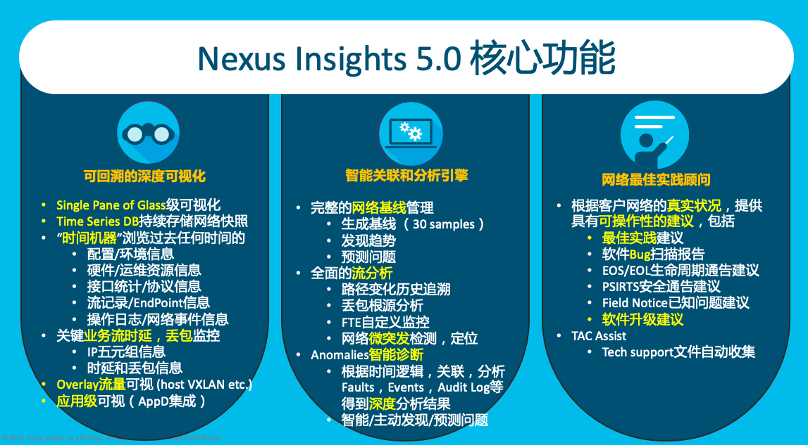
Nexus Insights在DCNM上的部署非常简单，通过以下几步即可完成：
- DCNM Telemetry Network切换为Inband网络 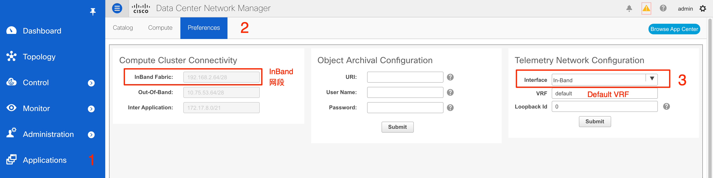
注意： 如果NI已经部署，修改Telemetry network之前需要在NI中把所有fabric删除。
- 配置交换机的Inband网络
Inband网络配置在交换机的front-panel-port上，存在很多种配置方法，在本lab中采用了最简单的underlay三层接口的方式配置。
选择 Control - Fabric - Interfaces， 选中一台交换机连接Inband网络的接口, 点击Edit
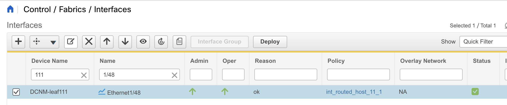
配置接口地址, 注意freeform中的配置，将Inband网段在underlay网络中发布，以便其他交换机可以通过underlay网络访问Inband网络中的DCNM Compute Node。
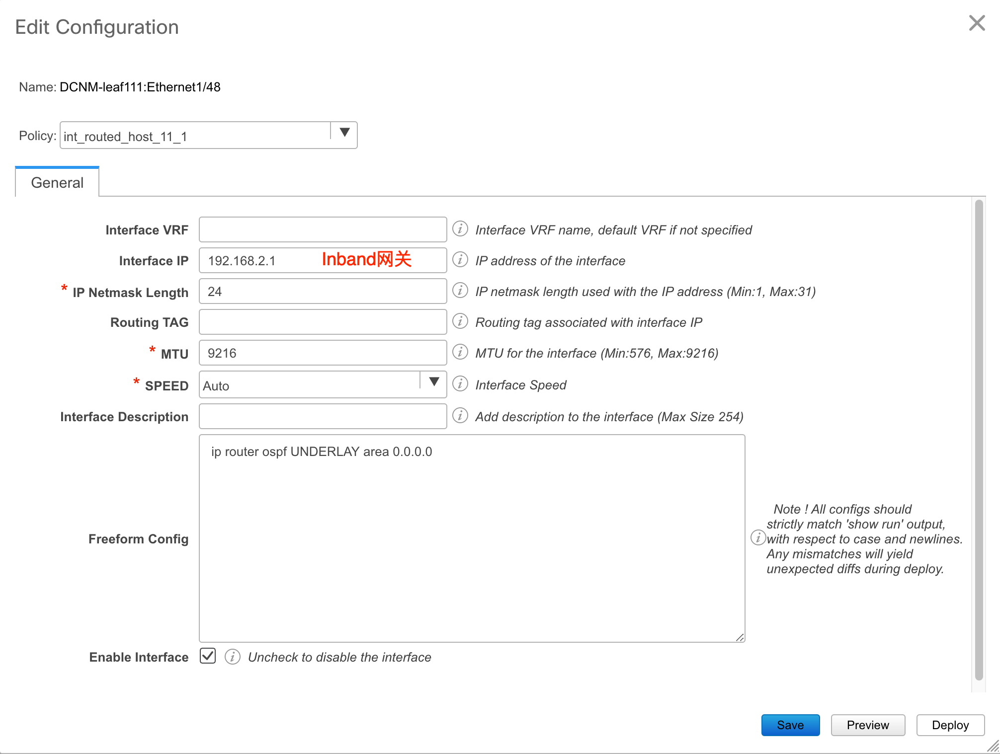
Deploy之后可以登录交换机查看部署的inband配置,并且可以ping通DCNM服务器的inband地址
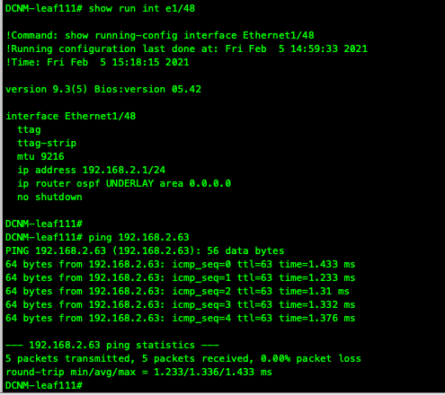
在其他交换机上也可以从loopback0正常ping通DCNM服务器的inband地址
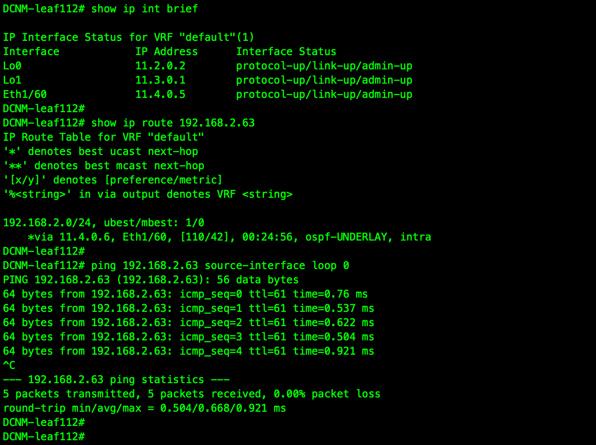
从DCNM Compute Node上也可以进行检查
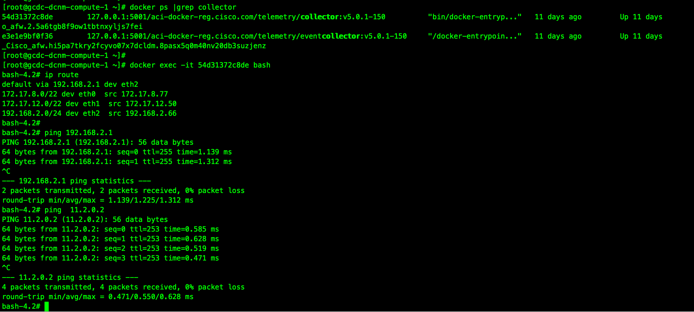
- 安装NI App
选择 Application - Catalog - Browser App Center 进入Cisco DC App Center下载最新版本的Nexus Insights
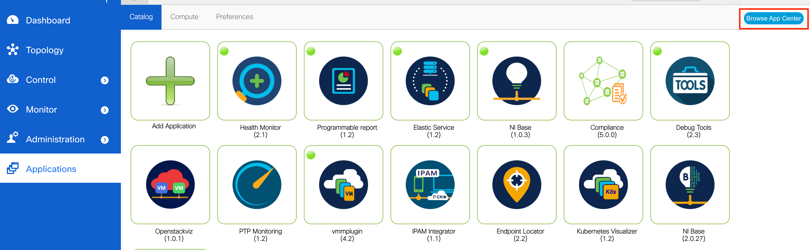
点击下载，下载完成后校验MD5
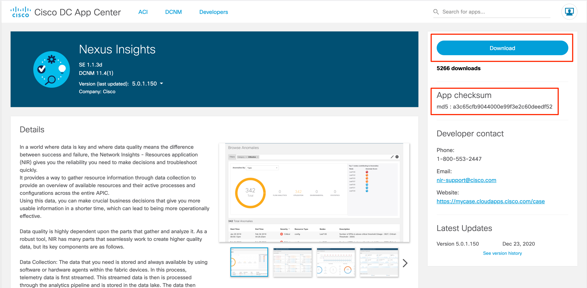
选择 Application - Catalog - Add Application, 上传下载好的NI App
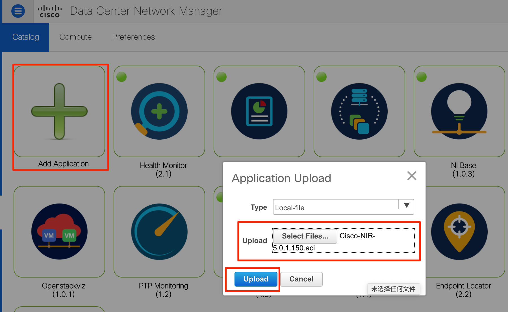
NI App上传完成后，双击NI App进入NI
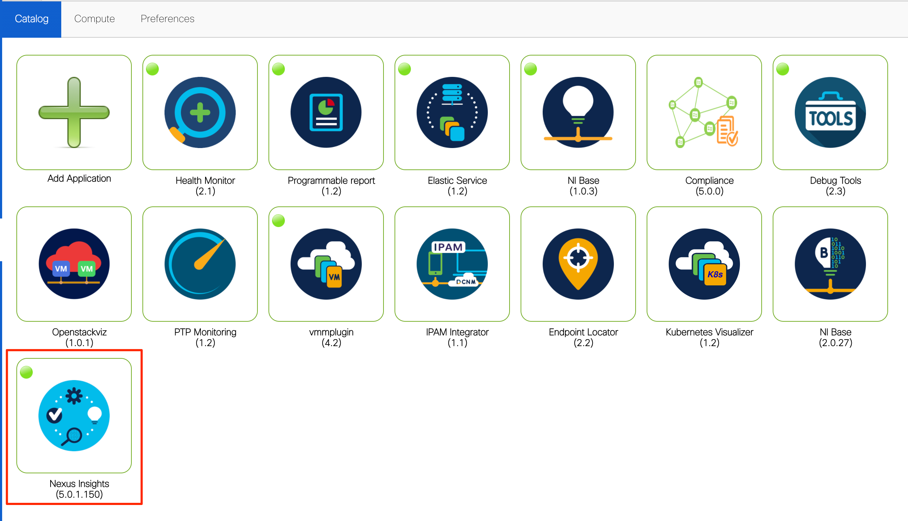
- NI的初次设置
初次进入NI，会看到NI的welcome画面，点击 Review First Time Setup
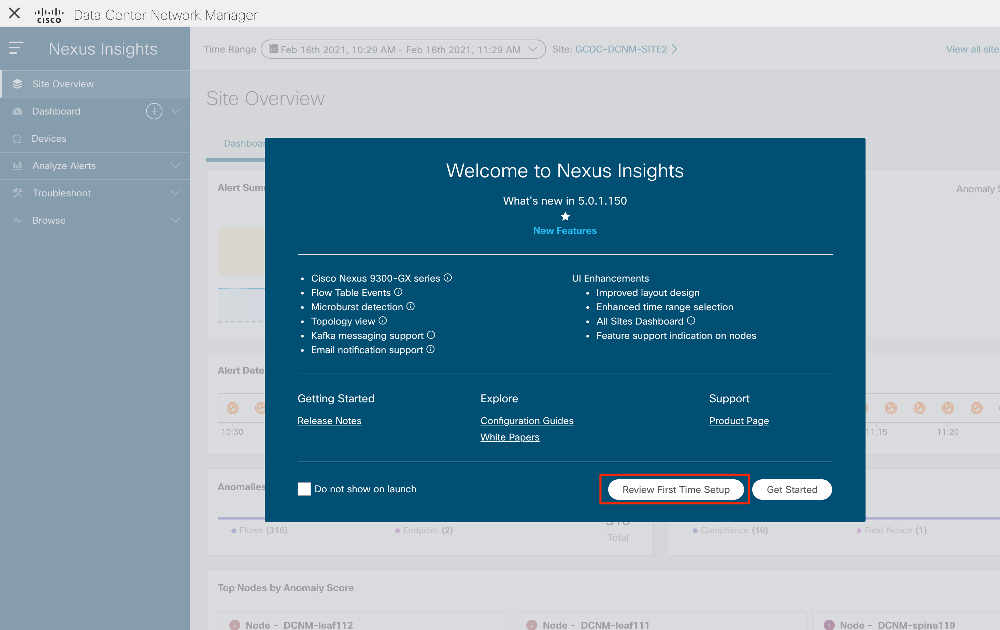
点击 Data Collection Setup - Edit configuration 进行监控目标Fabric初始设置
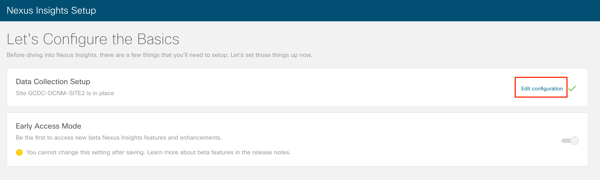
选择DCNM中已配置好的Fabric，选择对应的Fabric Type 和 Mode， 点击done完成添加
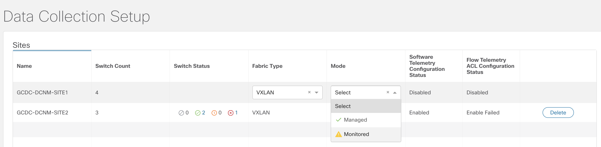
等待一段时间完成fabric的添加，在switch status可以查看交换机的状态
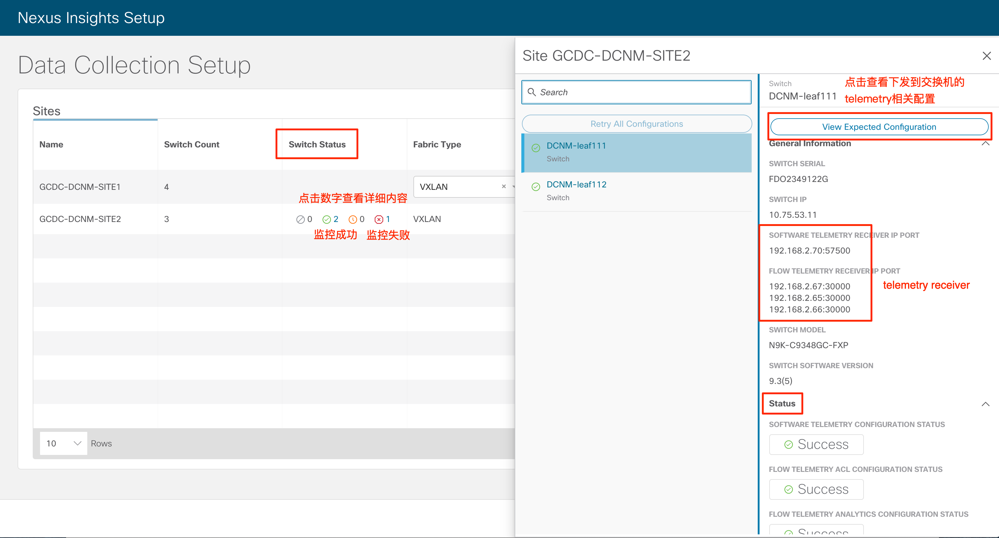
交换机配置分为Software/Flow telemetry两部分，managed mode下会自动推送到switch，monitored mode需要手工拷贝粘贴到交换机上执行。
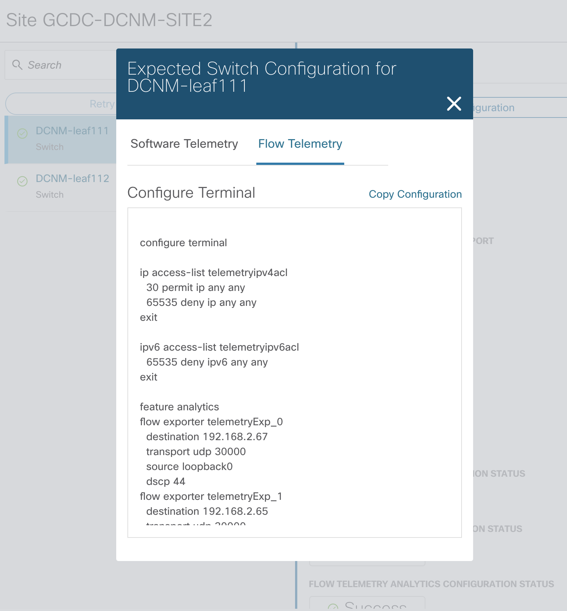
选择Data Management，进行监控数据源设置
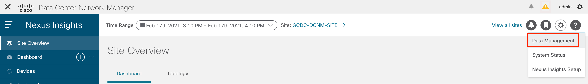
针对支持flow analytics的Gen2 N9K， 开启流监控
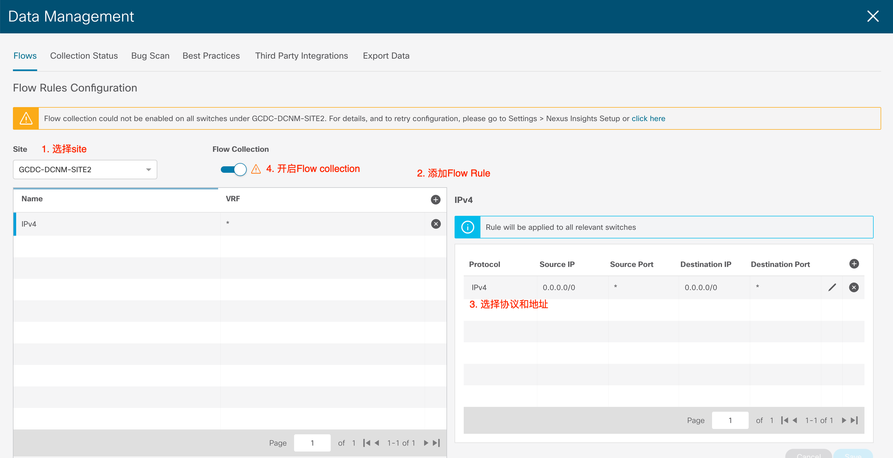
至此，NI的设置基本完成，可以在collection status查看状态
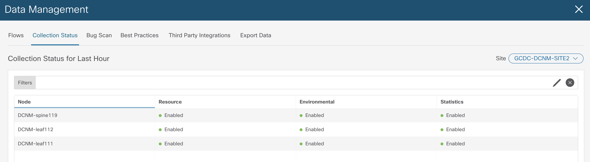